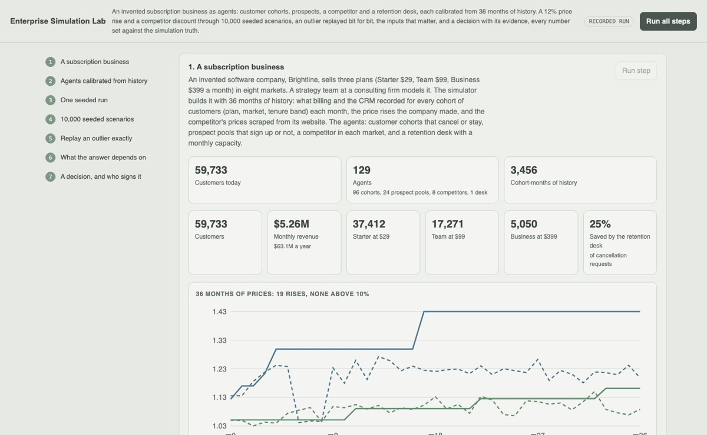
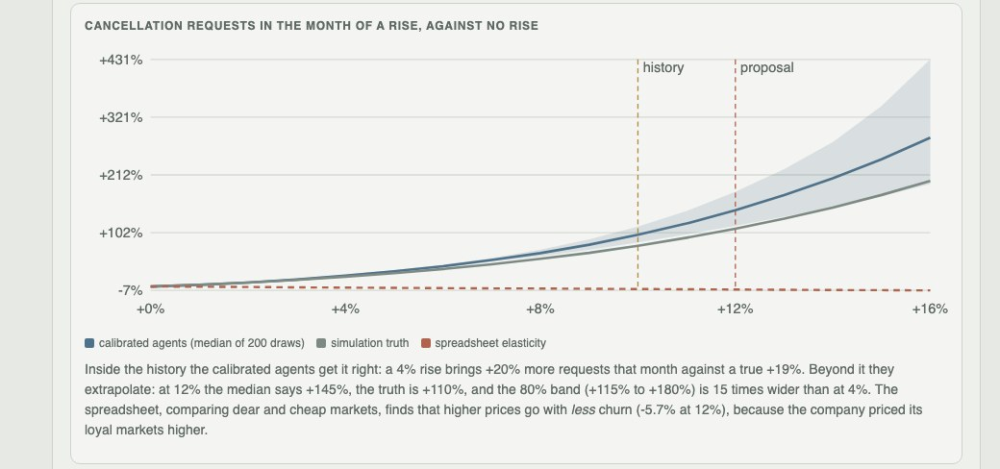
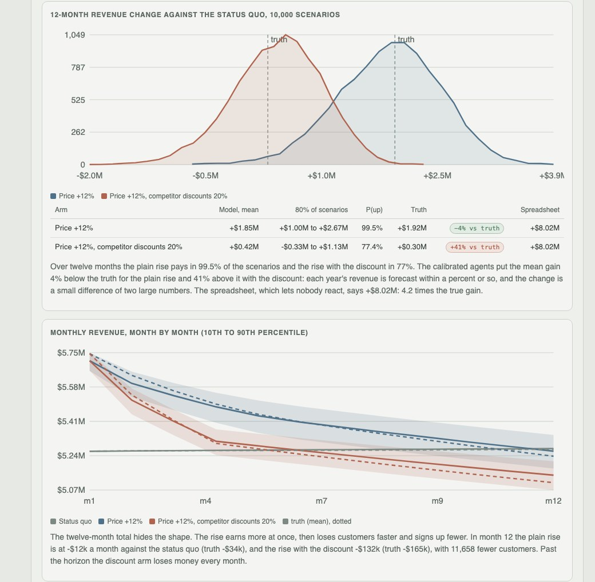

Python · agent-based simulation · Sobol · 2026-10
What Is a 12% Price Rise Really Worth?
An invented subscription business as calibrated agents (customer cohorts, prospects, a competitor, a retention desk): a 12% rise and a competitor discount through 10,000 seeded scenarios, the worst one replayed bit for bit, the unknowns ranked by Sobol analysis, and a decision that abstains. The agents say +$1.85M over a year where the true world gives +$1.92M; a spreadsheet says +$8.02M.

Built from a written blueprint as one vertical slice. The business is simulated: its customers, 36 months of history, the competitor and the true behaviour behind them come from a generator in the repository, which is what lets every forecast be scored against the truth. No language model is used: the blueprint's bounded LLM agents are left out, because an LLM's behaviour can be neither calibrated against churn history nor replayed bit for bit. Not built: employees and suppliers as agents, an assumptions workspace UI, SSE progress, real data, Kafka, Kubernetes, single sign-on.
01 — The problem
A software company wants to raise prices 12%. Finance has a spreadsheet: last year's churn, a price elasticity from comparing markets, revenue up $8M. But customers react to a rise, the competitor may answer with a discount, the retention team fills up, and the company has never raised prices by more than 10%. Can a lab of calibrated agents say what the rise is worth, how sure it is, what the answer depends on, and reproduce any scenario on demand?
Blueprint 18 of twenty in a fourth build book, built as its demo scenario end to end.
02 — What I built
A Python service on PostgreSQL with a background worker and a web page, started by one docker compose up.
- A simulator of customer cohorts (market x plan x tenure band), prospect pools, a competitor per market and a retention desk with a capacity, drawn binomially month by month; the true world adds three hidden price-sensitivity tiers.
- Calibration of every agent from 36 months of confounded history: a binomial hazard with market effects and a profiled notice-shock curvature, Poisson signups, the competitor's reactions read off a noisy price scrape.
- Seeded experiments: every scenario draws its own parameters from the calibration's uncertainty from
(entropy, index)alone, so any one replays bit for bit. - Sobol sensitivity with a quadratic surrogate, and decision records that abstain when the plan extrapolates and need a second person to sign.
03 — How it was built
- 01
A history that misleads a spreadsheet
59,733 customers on three plans in eight markets, $5.26M a month, and 36 months of what billing and the CRM recorded for every cohort. Management raised prices in loyal markets and right after the competitor raised its own, 19 times, never by more than 10%. Compare markets, as a spreadsheet does, and higher prices go with less churn: an elasticity of −0.52, the wrong sign.
p0 = np.exp(-0.35 * u + r.normal(0, 0.03, M)) # loyal markets carry higher prices - 02
Agents calibrated, not assumed
Cancellation requests are fitted as a binomial hazard with plan, market and tenure effects, the price gap to the competitor, and a notice shock κ·(rise/5%)^ψ in the month of a rise, its curvature ψ profiled on a grid. Inside the history the fit is right: a 4% rise brings +20% requests against a true +19%. At 12% it extrapolates: +145% against a true +110%, with a band 15 times wider. The competitor answered 6 of 10 large rises with a discount.
fits = [irls(*churn_design(obs, psi)) for psi in PSI_GRID] w = np.exp(ll - ll.max()); w /= w.sum() - 03
10,000 scenarios, each its own seed
Scenario i uses
default_rng([entropy, i])and nothing else: it draws ψ from the profile likelihood, the other parameters from the Laplace approximation, the competitor's reaction probability from its Beta posterior, then runs every arm on those draws, so changes against the status quo are paired. Three arms, 30,000 runs, 23 seconds: 2.3 ms a scenario.rng = np.random.default_rng([entropy, i]) p, comp = draw(cal, rng) - 04
The worst one, replayed bit for bit
Only seeds and results are stored for the batch. The worst scenario for the discount arm, number 8,788 at −$2.05M, is re-run from its entropy, index and policy version: the SHA-256 of its monthly outputs matches, and this time all 32 events are recorded. It drew a curvature of 2.6 against a best estimate of 1.8: the tail the history cannot rule out.
same = digest(o) == r["result_hash"] - 05
What it depends on, and who decides
Sobol indices over seven inputs from 9,216 runs: the notice-shock curvature (0.33), our customers' sensitivity to the competitor's price (0.26) and the depth of its discount (0.25) explain the most; a quadratic surrogate reproduces held-out runs with R² 0.98. The policy abstains: revenue rises over a year in 99% of scenarios, but by month 12 it is below the status quo in 57%, and 12% is beyond the history. The strategist cannot sign their own proposal; the partner records a staged test.
elif worst >= 0.9 and pmrr[arm] >= 0.5 and not extrapolating: outcome = "adopt"
04 — Results
The demo. Calibrated churn response against the truth and the spreadsheet; right inside the history, an extrapolation beyond it:

10,000 scenarios of the revenue change, and month-by-month revenue:

On five other simulated businesses:
| Calibrated agents | Spreadsheet | |
|---|---|---|
| Churn response to a 4% rise | within 3 points of the truth | elasticity −0.79 to +0.63 |
| Churn response to a 12% rise | −21% to +70% of the truth | – |
| 12-month revenue change, +12% | 10–37% off the truth | about 3x the truth |
| Same, with a competitor discount | 8–85% off | about 3x and more |
| Sign of month-12 revenue change | right in 9 of 10 | – |
| True outcomes inside the 80% interval | 58% | – |
The agents beat the spreadsheet by a wide margin, but the number asked for, the year's gain, is off by tens of percent: each year's revenue is forecast within a few percent, and the gain is a small difference of two large numbers. The intervals are too narrow, because the hidden sensitivity tiers are a misspecification no parameter uncertainty covers. What holds up is the shape: the rise pays for a year and then costs.
Honest limits. Synthetic business and history; rule-based and probabilistic agents only; a replay is bit for bit on the platform that ran it (the same seeds on macOS give a different history).
Checks. 9 tests, including: customers are conserved and a full desk saves exactly its capacity, a scenario replays bit for bit on its own and inside a batch, market effects undo the confounding the spreadsheet falls into and the curvature's interval holds the truth, the competitor's promotions and reactions are read correctly off a noisy scrape, the replay of the demo's outlier matches its stored hash, the proposer cannot approve, and one client cannot see another's scenario.
05 — What I'd do next
- A staged test as a first-class plan: a rise in two markets, with the posterior on the curvature updated from its result.
- Distribute a batch across workers by scenario index, which the seeding scheme already allows.
- A richer misspecification check: fit the tier mixture and see whether the intervals become honest.